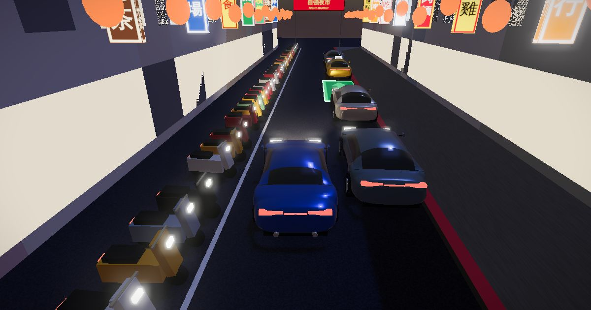
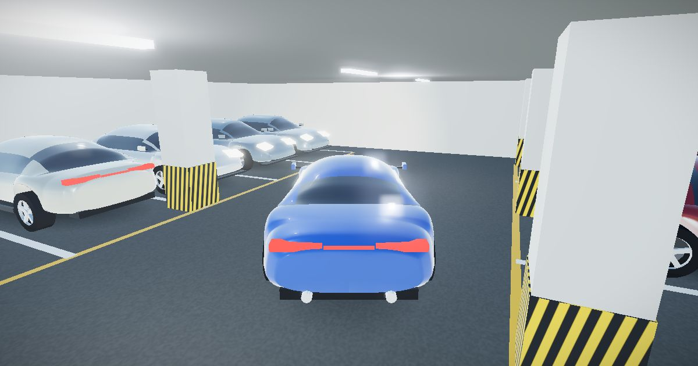
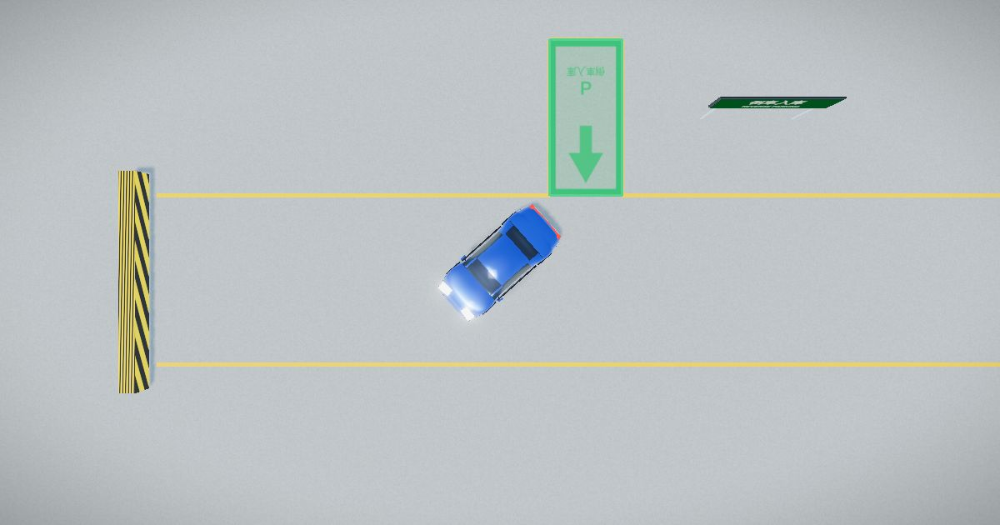
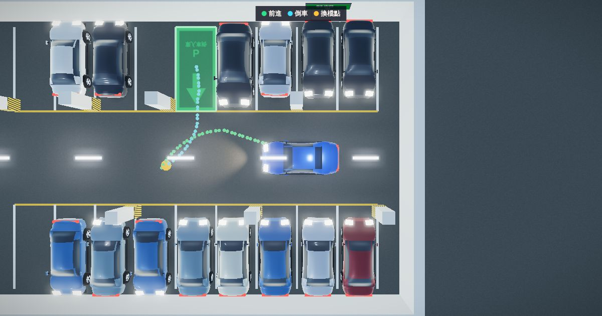

DRIVING TEST考照模擬：小型車場考
照著監理站「小型車駕駛人場考評分標準」做的模擬考，100 分起扣、70 分及格。一站一站考完會拿到一張成績單，列出每一個扣分原因。也可以挑單一項目練習。車子是自排普通小型車，沒有倒車雷達和倒車顯影。
- 1
起駛
繫安全帶、轉頭看左後方、打左方向燈再起步。漏一個扣 32 分。
- 2
行人穿越道
無號誌路口要減速，行人要過就在停止線前停讓。2026 新制，沒停讓扣 32 分。
- 3
號誌路口・右轉
紅燈停在停止線前，綠燈後轉頭查看、打右方向燈再右轉。
- 4
鐵路平交道
停、看、聽：停止線前停車、左右察看，警示燈閃、柵欄放下時等火車過。
- 5
上坡起步
在坡道停車區停穩，起步時往後滑超過 15 公分扣 16 分。
- 6
平行路邊停車
車輪壓線扣 16 分，停好後要打方向燈、轉頭查看才能駛出。
- 7
倒車入庫
倒車停進車庫，壓線扣 16 分，駛出前一樣要打方向燈。
- 8
曲線前進・後退
前進壓線扣 32 分；後退壓線不扣分，但往前修正一次扣 8 分。
扣分項目整理自交通部公路局小型車場考評分標準與 2026 年 3 月 31 日起的新制。考場配置、項目順序和細節各監理站不同，請以報考監理站公告為準；遊戲中標「模擬」的扣分是為了判定方便自己加的規則。這個模擬只能幫你熟悉流程，不能取代駕訓班的實車練習。
12 LEVELS十二個關卡，一關比一關窄
駕訓班的路考項目和台灣街頭真的會遇到的停車地獄交錯排列，難度慢慢往上加。過一關才會解鎖下一關；同一關失敗 3 次，下一關會先幫你打開。每一關都用程式驗證過，確定有解。
- 01
新手上路 ★
大賣場停車場，開進兩台車中間的車位，熟悉方向盤和視角。
- 02
斜角停車 ★
單行道旁的 60 度斜角車位，小心右後方擦到隔壁車。
- 03
倒車入庫 ★★
路考經典。先開過車庫再倒進去，車頭朝外，輪胎壓到黃線就失敗。
- 04
路邊停車 ★★
倒進右側路邊格，前後線、紅白桿、路緣都不能碰。
- 05
加油站 ★★
開進兩座加油島中間，左右各只剩 27 公分。
- 06
曲線前進 ★★★
沿著 S 型彎道往前開，兩側黃線一壓就出局。
- 07
三點迴轉 ★★★
在 6.4 公尺寬的巷子掉頭，輪胎不能碰路緣，路邊還停著機車。
- 08
曲線後退 ★★★★
同一條 S 彎全程倒車退回起點，最多人在路考栽在這一項。
- 09
夜市巷口 ★★★★
夜市旁路邊停車，空位只比車長多 1.6 公尺，還會有機車騎過去。
- 10
斷崖觀景台 ★★★★
蘇花公路旁，車頭朝海停進兩台車中間，車頭離護欄不到 40 公分。
- 11
地下停車場 ★★★★
B3 倒車入位，左邊大休旅、右前角有柱子，車位只比車寬多 45 公分。
- 12
透天厝車庫 ★★★★★
五公尺寬的巷子，把車倒進自家車庫，通常要來回好幾次。



WHY IT'S HARD為什麼這麼難
車子用真實的轉向幾何計算：後輪不會轉，車尾會沿著比車頭更內側的路線走，所以太早打方向盤一定擦到。
碰到就失敗
輪胎壓線、碰到路緣、車身擦到車子、柱子、機車或牆，都直接失敗，沒有扣分制。
要停得正
整台車要完全在框內、車身角度在 4～10 度以內，還要停穩 1 秒才算停好。
後方顯影＋導引線
打倒車檔時畫面上方會出現後方顯影，彎曲的導引線會跟著方向盤角度變化。
倒車雷達
前後六個感應器，靠近障礙物會從綠變黃再變紅，嗶嗶聲也會越來越急。
真的方向盤
方向盤左右各轉 540 度。手機上用手指轉動方向盤，放開不會自己回正。
四台車
小車、跑車、休旅車、發財車，尺寸和迴轉半徑都不同。大車用星星解鎖，有些車位大車根本停不進去。
提示路線
卡住時按「提示路線」，會從車子現在的位置算出一條真的停得進去的路線畫在地上。新拿到星星就會補充次數。
倒帶 3 秒
擦撞之後可以倒帶回 3 秒前接著停，每次挑戰兩次。用了提示或倒帶，這次最多兩顆星。
三顆星
完成一顆、在目標時間內兩顆、偏移 15 公分且角度 1.5 度以內才有第三顆。
CONTROLS操作方式
| 動作 | 鍵盤 | 手機（直拿／橫拿） | 手把 |
|---|---|---|---|
| 前進 | W 或 ↑ | 按住「前進」 | RT |
| 倒車 | S 或 ↓ | 按住「倒車」 | LT |
| 方向盤 | A D（放開會慢慢回正） | 左下角方向盤用手指轉，「回正」鍵歸零 | 左搖桿 |
| 煞車 | 空白鍵 | 「煞車」 | A |
| 切換視角 | C（追車／俯視／駕駛座） | 右上「視角」 | — |
| 考照：安全帶／轉頭看／方向燈 | B／Z X／Q E | 上方按鈕列 | — |
| 提示路線 | H | 右上「提示路線」 | — |
| 環顧四周 | 滑鼠拖曳畫面 | — | — |
| 重來 | R | 右上「重來」 | — |
FAQ常見問題
要付費或下載嗎？
不用。完全免費，用瀏覽器打開就能玩，不需要安裝或註冊。
可以拿來練習路考嗎？
可以用「考照模擬」熟悉場考流程：繫安全帶、轉頭確認死角、打方向燈、平交道停看聽、停讓行人這些一漏就扣 32 分的動作，練到變成習慣。結束後的成績單會列出每個扣分原因。場地尺寸是為了遊戲調整過的，不等於監理站的實際規格，也不能取代實車練習。
手機可以玩嗎？
可以，直拿、橫拿都行，畫面會自動換版面。左邊是可以轉動的方向盤，右邊是前進、倒車、煞車三個踏板。
卡關怎麼辦？
按「提示路線」（鍵盤 H），遊戲會從車子現在的位置算出一條真的能停進去的路線畫在地上；撞到之後也可以倒帶 3 秒。也可以去車庫換台小車。同一關失敗 3 次，下一關會先解鎖。
紀錄會存在哪裡？
星星、解鎖的車、提示次數和最佳時間只存在你自己的瀏覽器裡（localStorage），不會上傳到任何伺服器。